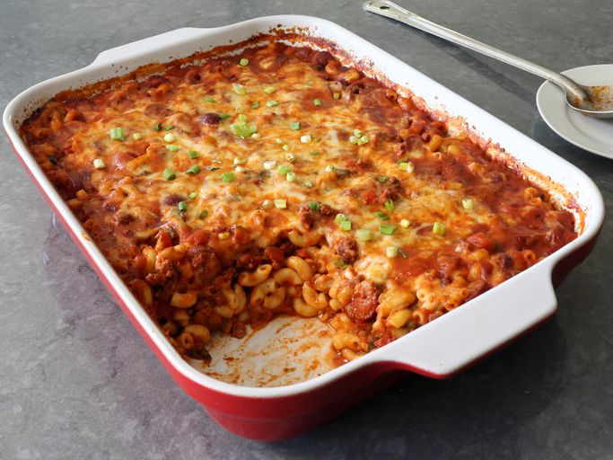

Chili dog Mac n Cheese

Description
Mac n Cheese with a "Chili dog" spin on it.
Ingredients:
- olive oil
- ground beef
- onion, diced
- kosher salt
- chili powder
- ground cumin
- paprika
- ground black pepper
- ground cinnamon
- cayenne pepper
- Mexican oregano
- Minced Garlic Cloves
- diced green peppers
- Sliced Hot Dogs
- crushed tomatoes
- water
- elbow macaroni
- shredded white Cheddar cheese
- shredded Monterey Jack cheese
- green onions
Steps:
- Add olive oil to a large pot and place over high heat. Add beef; cook and stir, breaking up with a spoon or spatula, about 2 minutes. Add onions and salt, and cook, stirring, until beef is crumbly, and onions turn translucent, about 5 minutes.
- Add the chili powder, cumin, paprika, black pepper, cinnamon, cayenne, dried oregano, and garlic. Cook, stirring, for about 2 minutes.
- Add peppers, sliced hot dogs, crushed tomatoes, and water. Stir together; bring the mixture to a simmer. Reduce heat to medium-low and simmer, stirring occasionally, until cooked to your taste, at least 30 minutes. Taste and adjust seasoning.
- Once chili is nearly ready, fill a large pot with lightly salted water and bring to a rolling boil. Stir in macaroni and return to a boil. Cook pasta uncovered, stirring occasionally, 1 minute less than specified in package directions, until not quite tender, and still firm to the bite, about 8 to 11 minutes.
- Meanwhile, preheat the oven to 400 degrees F (200 degrees C).
- Turn off heat under chili, drain macaroni, and add to the pot of chili. Stir until combined, and transfer mixture into a large, deep (15x10-inch) baking dish.
- Mix Cheddar and Monterey Jack cheeses together in a bowl, and transfer about 60% of cheese to top of chili mixture. Use a spoon to thoroughly mix cheese into the casserole.
- Apply remaining cheese evenly over the top, and lightly poke down into the surface with the tip of a spoon.
- Bake in the preheated oven until bubbly, 30 to 35 minutes. Let rest 15 minutes before serving, topped with green onions.